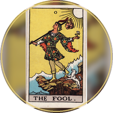

‹
00 Classic
01 Apocalypso
02 Digital
03 Spotify
04 Astrology
05 Moon
06 CalciferCountdown
07 Castalia
08 Settings
09 Synastry
10 Spectrum
11 Chakra
12 TibetanBowl
13 Rocket
14 Radar
15 Faculty
16 Weather
17 Quotes
18 LiveTransits
19 Tarot
20 Notes
21 Ocarina
22 Bongo
23 Piano
24 Level
25 Tuning
26 PanDrum
27 Alethiometer
28 Runes
›
{{{ SCRIPT }}}